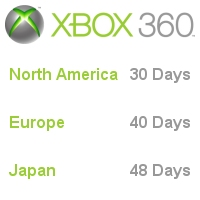

CESPage.com Xbox Weekly Update Nine
Xbox 360 Countdown Continues, Xbox 360 Rumour Watch and Origen Xbox 360
By CESPage.com Xbox, Published 23th October 2005
Xbox 360 Countdown Continues
It is just a month now until the North American launch of the Xbox 360, with Europe 10 days later the anticipation is building. This launch is preceded
by a brand new Xbox.com with new features, with My Xbox which unites Xbox Live and Xbox 360. This unity allows gamers to compare achievements gained in
Xbox 360 games and with other gamers. You will be able to see your and their gamer card with the gamer score and gamer motto and see achievements gained
and yet to be gained. Your friends list will also be viewable online also, plus the Gamercard can be placed on your website and blog so even off Xbox.com
people can see how good or bad you are!
This week's title in focus is Perfect Dark Zero which is the follow-up but prequel to the successful Perfect Dark for the Nintendo 64 featuring the character
Joanna Dark. The game allows up to 32 players to play the game on Xbox Live and this may be updated later to allow even up to 50 players. With multiple weapons
and items such as jet packs to get around plus a cooperative mode that allows two players to play the game as Joanna Dark and her father this can even be done
via Xbox Live.

Xbox 360 Rumour Watch
With the launch of the Xbox 360 coming up there are a lot of rumours around, from now until launch CESPage.com Xbox will examine these rumours and separate the
truth from these rumours.
Rumour: The Xbox 360 DVD9 only allows 7GB
False: This is not true the 2GB difference is the result of confusion between the Hard Drive and the Disc format. The Hard Drive has 2GB of space reserved for
game streaming where required (99% of titles do not require it) and backward compatibility streaming. The DVD format used by the Xbox 360 stores up to 9GB now
on the Xbox and the same on the Xbox 360 this rumour is not true.
Rumour: The Xbox 360 is only really Xbox 1.5
False: If you compare the Xbox and Xbox 360 there is a lot more than 50% of a difference between them. Just take the processor power the Xbox has a 733Mhz Intel
Celeron Processor with access to 64 MB of RAM, however the Xbox 360 has three 3.3GHz Cores (Dual Threaded) with access to 512 of RAM. Even mathematically the
Xbox 360 has eight times more ram and even one core of the Xbox 360 is around five times faster than the Xbox processor so is fifteen times more powerful.
With eight times more memory and fifteen times more processor power this could be reasoned down but even by half or quarter of this it is still over four
times the specification of the Xbox so this is not true.
Rumour: The Xbox 360 is not HD (High Definition)
False: The Xbox 360 supports up to 720p this is the bar for High Definition, 1080i is supported but is a similar format with two interlaced 720p frames. There is
a high end 1080p format but these televisions are very expensive. Just because the Xbox 360 does not go this high does not mean it is high definition anything over
480p (Standard Definition) is an improvement over current generation.
Rumour: The Xbox 360 has a giant power supply
True: This rumour is true however it is not as negative as has been made out, the power supply is a step down transformer also, taking a 110, 220/240 volt supply and
turning it into six 12 volt feeds that go into the console. This helps reduce need for extra cooling for the console, those with a PC will know the average power
supply for a computer will do the same thing but has its own fan and is quite large. More like a lap top power supply it allows for passive cooling of the power supply
adding up to a quieter console so this rumour is partially true.
Rumour: The Xbox 360 E3 Limited Edition Faceplate does not fit the retail console
False: When the Xbox 360 was announced at E3 2005 in the United States, Microsoft gave out to all attending the announcement a faceplate for the Xbox 360 for free!
However it has been recently mentioned that this faceplate does not fit the retail console this has been quashed by Microsoft it fits the console just fine the
pre-release and debug units are different and therefore it is these it does not fit but neither are the consumer unit.
Origen Xbox 360 Week 10
Origen Xbox 360 for the final two places to the Origen Xbox 360 event gives people the chance to design their gamer tile used as part of a gamers Xbox 360 identity
on the console. You just need to design a 64x64 500KB graphic in JPG, GIF or PNG format the best two entries will win the last two places to this pre-launch Xbox 360
event in the United States.
If you live in UK, Ireland, France, Germany, Spain, Italy, the Netherlands, Denmark, Finland, Norway, Sweden, Belgium, Switzerland, Austria, Portugal or Greece then
you can enter, so get designing a gamer tile for places 7 and 8 at Origen.
You visit the Origen Xbox 360 website at www.origenxbox360.com